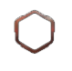

  <div data-page="achievements" class="page no-tabbar">
    <div class="navbar">
      <div class="navbar-inner">
        <div class="left sliding">
          <a href="#" class="back link">
            <i class="icon icon-back"></i>
            {{#unless @global.android}}<span>Tillbaka</span>{{/unless}}
          </a>
        </div>
        <div class="center sliding">Achievements</div>
      </div>
    </div>
    <div class="page-content achievements-content">
      <div class="content-block">
        <p>Här syns alla dina achievements du har fått under din tid på  F-sektionen</p>
        </img>
        <div class="progress-bar orange stripes">
          <span style="width: 40%"></span>
        </div>
        <div style="text-align:center" class="progress-text orange">
          <span>100/200</span>
        </div>
      </div>
      <div id="achievement-list" class="list-block media-list">
      </div>
    </div>
  </div>
